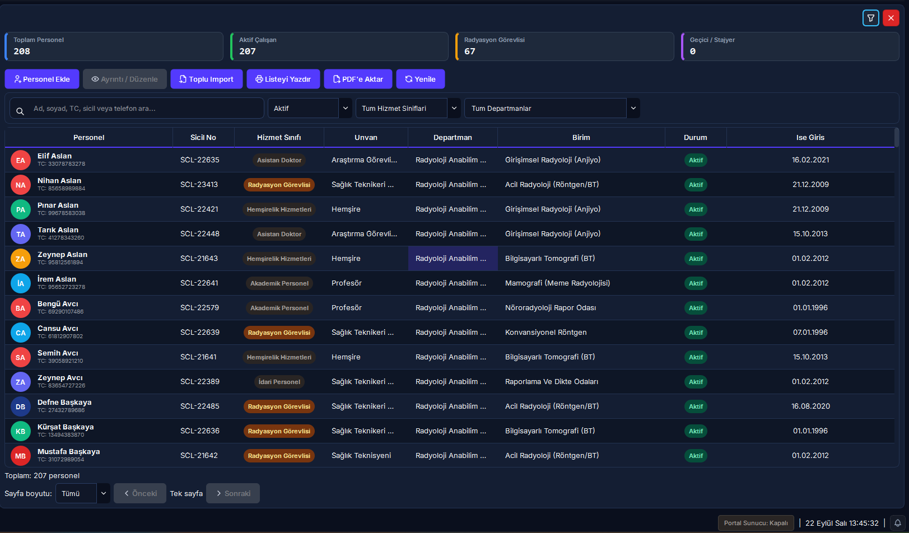
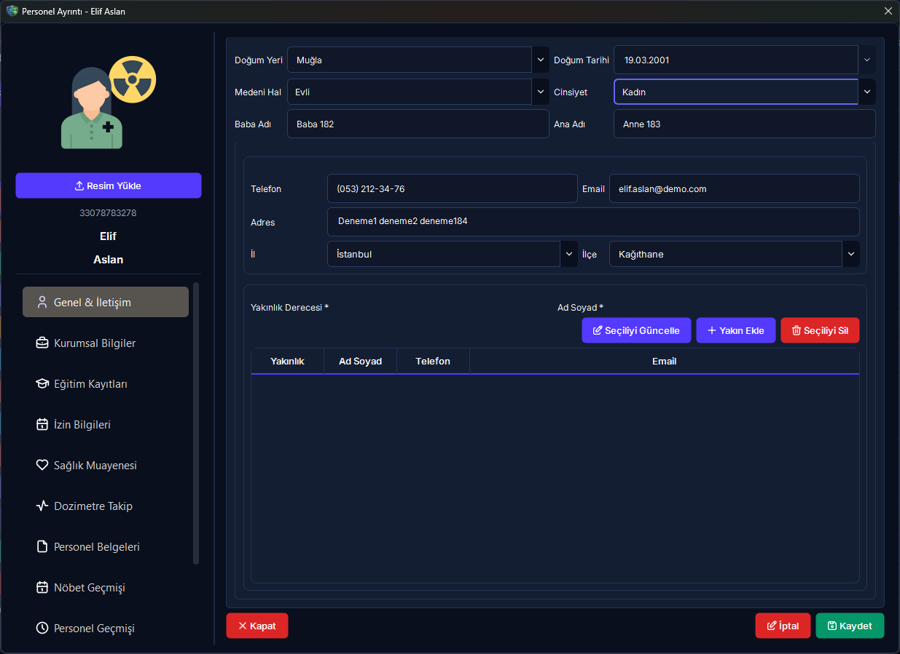
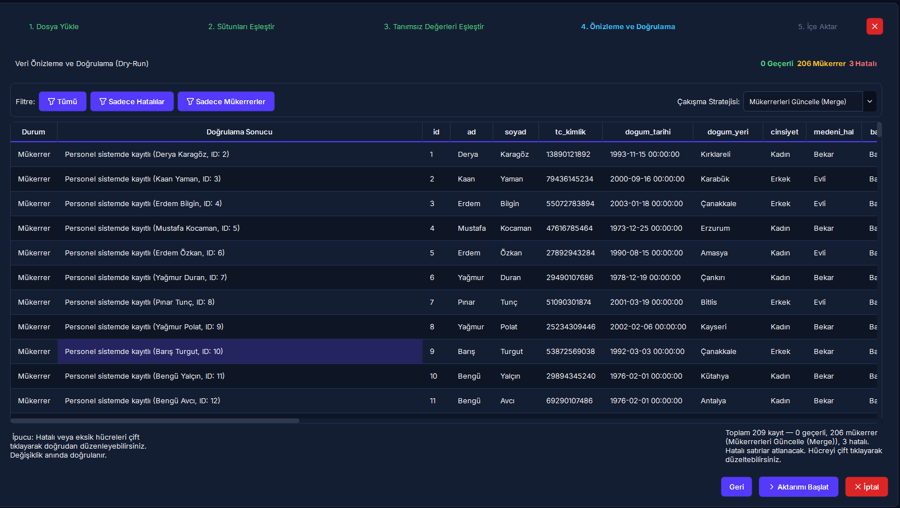

Personel Yönetimi, Lisans Kotası & Toplu İçe Aktarım
Radyasyonla çalışan ve idari personelin özlük kartını yönetme, aktif lisans kotası kontrolü, otomatik kullanıcı hesabı üretimi, 5 adımlı toplu Excel veri aktarımı, gebe/emzirme koruma kalkanı ve 30 yıllık yasal KVKK/NDK arşiv paketini oluşturma rehberi.
Kısa Reçete: Yeni Personel Kaydı ve Yasal Yaşam Döngüsü Yönetimi
Kurum lisans kotasını aşmadan yeni radyasyon çalışanını kaydetmek, otomatik giriş hesabını açmak ve ayrılışta 30 yıllık yasal KVKK arşiv paketini güvenceye almak.
[Personel Ekle] sihirbazıyla kimlik, iletişim, özlük, eğitim ve belgeleri girip [Kaydet] butonuna basın. Personel ayrılışında [Ayrıntı / Düzenle] > [İşten Ayrılış] sekmesinden zimmet denetimini tamamlayıp [KVKK ve Özlük Arşiv Paketini İndir (ZIP)] butonunu kullanın.
Aktif personel kotası doğrulanır ve giriş hesabı otomatik oluşturulur; ayrılan personelin doz, sağlık ve özlük geçmişi 30 yıl saklanmak üzere korunurken lisans kontenjanı anında serbest bırakılır.
5N1K Kural ve Arayüz Çözümleme Tablosu
Personel lisans kotası, sayfalama koruması, gebelik/emzirme kalkanı, ilişik kesme ve toplu aktarım kuralları.
Kritik Sahada Yanlış Bilinen Kurallar (Mit Avcısı)
Süreç Akış Şeması
Uygun mu?"} B -->|Kota Dolu| C["Kota Uyarısı: Kayıt Engellenir"] B -->|Uygun| D["MERNİS TC Kontrolü & Otomatik Hesap"] end subgraph S2 ["2. AŞAMA: GEBE VE EMZİRME KORUMASI"] direction LR E{"Gebelik / Emzirme
Bildirildi mi?"} -->|Gebelik| F["Denetimli Alan & Gece/FM Kapanır (1 mSv)"] E -->|Emzirme - 1 Yıl| G["Kontaminasyon Yasağı & Süt İzni Muafiyeti"] E -->|Yok| H["Standart A/B Çalışma Koşulu"] end subgraph S3 ["3. AŞAMA: AYRILIŞ VE 30 YIL ARŞİV"] direction LR I["Zimmet & Dozimetre İade Kontrolü"] --> J["Ayrılış Kaydedilir & Kota Boşaltılır"] J --> K(["30 Yıllık KVKK / Özlük ZIP Arşivi"]) end D ==> E F & G & H ==> I
- Lisans Kotası ve Kayıt: Aktif personel eklenirken sözleşme kotası ile 11 haneli TC Kimlik numarası doğrulanır ve giriş hesabı otomatik açılır.
- Gebe ve Emzirme Koruması: Gebe çalışanlarda denetimli alan ve gece nöbeti kapatılarak 1 mSv fetüs eşiği izlenir; emziren çalışanlarda 1 yıl süreyle bulaşma riskli açık kaynak alanı yasağı ve gece muafiyeti uygulanır.
- Ayrılış ve 30 Yıl Arşiv: Zimmetli koruyucu ekipman ve aktif dozimetre iadeleri doğrulandıktan sonra personel ayrılışa geçirilir, kota serbest bırakılır ve 30 yıl saklanacak arşiv paketi oluşturulur.
Arayüz Ekran Görünümleri



Adım Adım İşlem Rehberi
1. Yeni Personel Ekleme ve 10 Kategorili Ayrıntı Kartını Yönetme
- [Personel Listesi] ekranında [Personel Ekle] butonuna tıklayın; 5 adımlı formda Kimlik Bilgileri, İletişim, Özlük İşleri (departman, unvan ve Koşul A/B radyasyon grubu), Eğitim Kayıtları ve Personel Belgeler alanlarını doldurup [Kaydet] butonuna basın (sistem giriş hesabı arka planda otomatik açılır).
- Kayıtlı bir personeli güncellemek için satıra çift tıklayın veya [Ayrıntı / Düzenle] butonunu seçin; sol listedeki 10 kategoriden (Genel ve İletişim, Kurumsal Bilgiler, Eğitim Kayıtları, İzin Bilgileri, Sağlık Muayenesi, Dozimetre Takip, Personel Belgeleri, Nöbet Geçmişi, Personel Geçmişi, İşten Ayrılış) ilgili sekmeye geçin.
- Bilgi değişikliği yaparken sağ üstteki [Düzenle] butonunu açıp güncelleme sonrası [Kaydet] butonuna tıklayın.
2. Gebelik / Emzirme Bildirimi ve İşten Ayrılış / 30 Yıllık Arşiv Paketi
- Kadın personelde gebelik veya doğum bildirmek için detay kartında gebelik bildirimi butonuna basın, tarihleri girip [Bildirimi Kaydet ve Nöbetleri İptal Et] butonuna tıklayın; gebelikte gece nöbetleri otomatik iptal edilir, emzirmede 1 yıl süt izni ve bulaşma koruması başlar.
- İşten ayrılan personelde [İşten Ayrılış] kategorisini açıp ayrılış tarihi ile sebebini seçin ve [Ayrılış Bilgilerini Kaydet] butonuna basın; sistem zimmetli koruyucu ekipman ve aktif dozimetre varsa iade onayı ister, aktif RKS görevi varsa sonlandırır.
- Tüm sağlık, dozimetre, izin, eğitim ve özlük belgelerini tek dosyada dışa aktarmak için [KVKK ve Özlük Arşiv Paketini İndir (ZIP)] butonunu kullanın.
3. 5 Adımlı Evrensel Toplu Veri İçe Aktarım Sihirbazı
- [Toplu Import] butonuna basıp [Şablonlar Klasörü] üzerinden 2 sayfalı Excel şablonunu (Veri Listesi ve Geçerli Değerler Kılavuzu) hazırlayın ve [Dosya Seç...] ile yükleyin.
- Sütun eşleştirme adımını doğrulayın; dosyada sistemde bulunmayan birim veya unvan varsa açılan 3. Tanımsız Değerleri Eşleştir adımında [Hepsini Eşle] ya da [Hepsini Yeni Yap] ile çözüp [Eşleştirmeleri Uygula ve İlerle] butonuna basın.
- Önizleme ve Doğrulama adımında [Sadece Hatalılar] / [Sadece Mükerrerler] filtrelerini kontrol ettikten sonra [Aktarımı Başlat] butonuna tıklayın; işlem bitince otomatik oluşturulan şifreleri [Kullanıcı Hesap Bilgilerini İndir (.txt)] ile alın ve varsa [Hata Raporunu Aç] ile hatalı satırları inceleyin.
4. Web Portalı Hesabım & Profilim Görünümü
- Saha personeli tarayıcı veya mobilden Web Portalı'na giriş yaptığında Hesabım & Profilim ekranından kendi iletişim, dozimetre, periyodik sağlık/EK-1, eğitim ve izin/nöbet kayıtlarını görüntüler.
- Personele bağlı gebelik veya rotasyon bildirimi gönderildiğinde talep doğrudan masaüstü yetkili onay kuyruğuna iletilir; yöneticiler ise Web Portaldaki personel gösterge panelinden kadro özetini salt okunur izler.
Sıkça Sorulan Sorular (SSS)
Kuruluş lisans kotamız dolduğunda yeni personel ekleyebilir miyiz?
Hayır. Lisans sözleşmesindeki aktif personel kotası dolduğunda sistem yeni aktif personel kaydını durdurur. Ancak işten ayrılan personellerin ayrılış işlemi kaydedilip pasife alındığında boşalan kontenjan kadar yeni kayıt hemen açılabilir.
TC Kimlik Numarası girildiğinde sistem neden doğrulama uyarısı veriyor?
Mükerrer ve hatalı resmi bildirimi önlemek için 11 haneli MERNİS algoritma kontrolü ve sistem içi tekillik denetimi uygulanır. İlk hanesi sıfır olan, sağlama toplamı tutmayan veya başka bir personelde kayıtlı olan TC numaraları kabul edilmez.
Emzirme döneminde radyasyon çalışanı için sayısal mSv dozu sınırı var mıdır?
13.04.2023 tarihli ve 32162 sayılı Yönetmelik, 657 sayılı Kanun m. 101 ve ilgili çalışma şartları yönetmeliği gereğince emzirme döneminde sayısal bir mSv sınırı yerine radyoaktif bulaşma (kontaminasyon) riski taşıyan açık kaynak alanlarında çalıştırılmama kuralı uygulanır; buna ek olarak 1 yıl boyunca süt izni saat azaltımı ve gece nöbeti muafiyeti devrede tutulur.
Toplu personel dosyası yüklerken Excel'deki bir birim veya unvan sistemde yoksa dosya tamamen iptal edilir mi?
Hayır. Sihirbaz tanımsız değerler için otomatik olarak eşleştirme adımını açar. Her bilinmeyen birim veya unvanı sistemdeki mevcut bir tanımla eşleştirebilir, yeni tanım olarak ekleyebilir ya da o satırı atlayarak kalan geçerli personelleri sorunsuz aktarabilirsiniz.